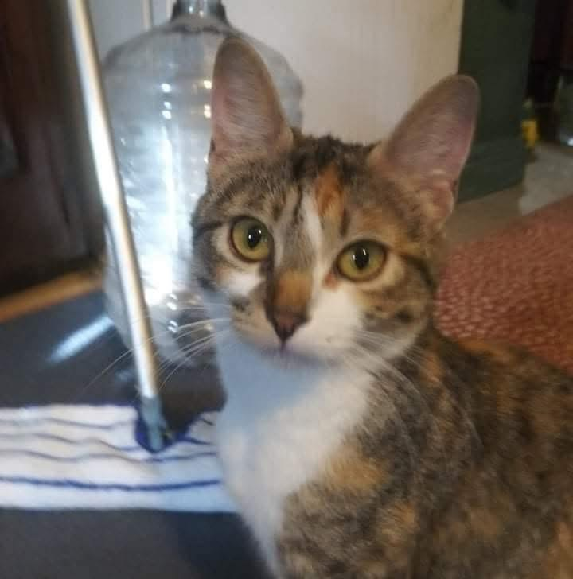
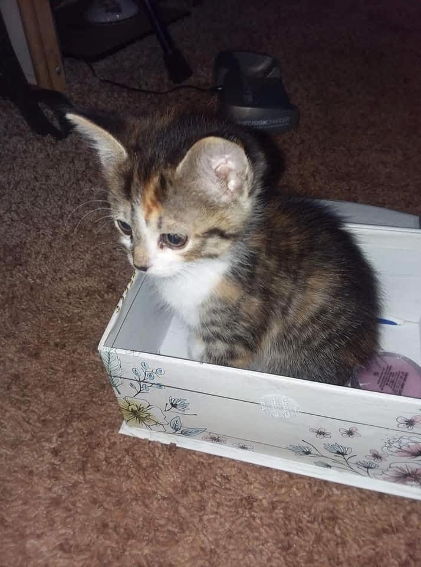
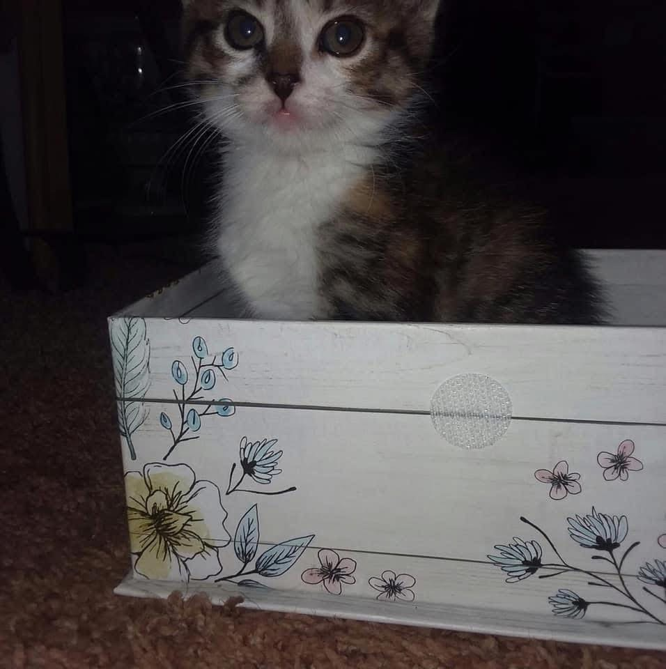

About Callie
Callie is not just a cat; she’s my heart and soul. Her purrs are my music, her cuddles are my comfort, and her playful antics make every day brighter. This website is a tribute to the pure love she brings into my life. ❤️
Callie's Photo Gallery
A collection of Callie's cutest moments:



Memories of Callie
Callie was more than a pet—she was a part of my soul. Here are some of the special moments I’ll always hold close to my heart:
- The way she would curl up on my lap during rainy days, her purring as comforting as the rain outside.
- Her playful streak, chasing after strings and acting like the queen of the house.
- The soft nuzzles she'd give me when she knew I needed comfort the most.
Every day with Callie was a gift, and I miss her more than words can express. She will forever be my light and love. ❤️